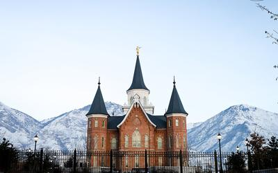
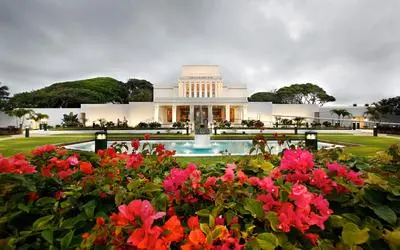
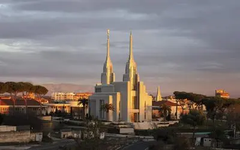
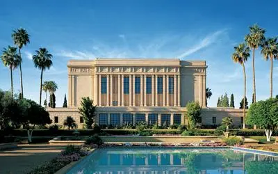

Temple Album
☰
Home
Old
New
Large
Small
Temple Album
Salt Lake Temple

Provo City Center Temple

Laie Hawaii Temple
Washington D.C. Temple

Rome Italy Temple
Payson Utah Temple
Manti Utah Temple

Mesa Arizona Temple
Jordan River Utah Temple